@FirefoxNightly
talking with our alpha testers@FirefoxNightly in a nutshell
June 2018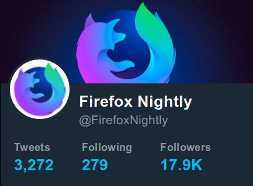
x2 followers in last 2 years
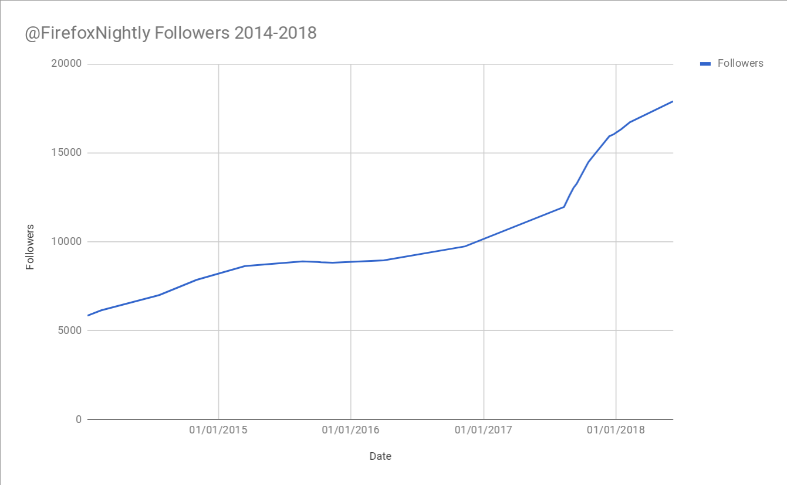Significant engagement
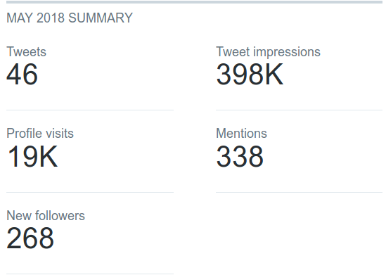Followers are OK to report bugs
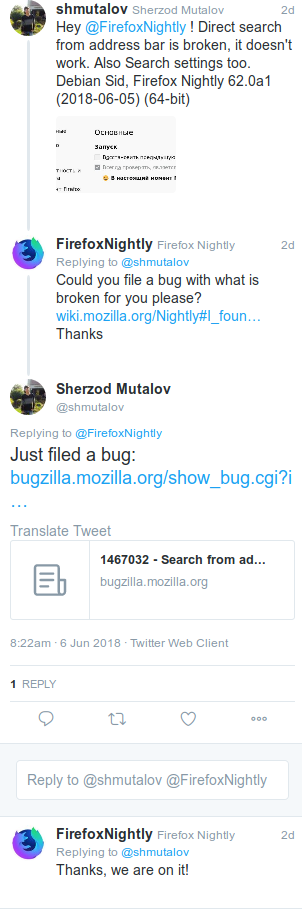Actionnable bugs
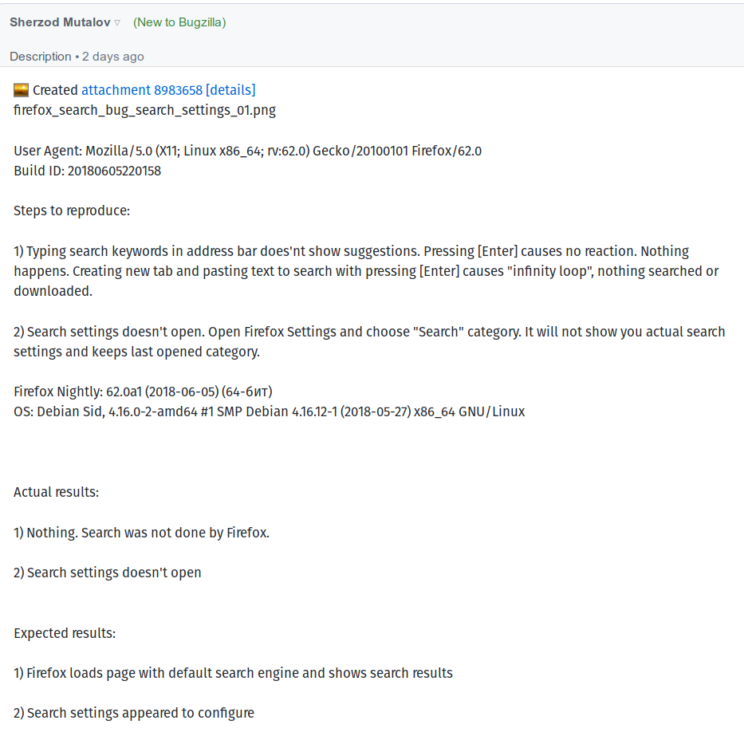Many good bugs
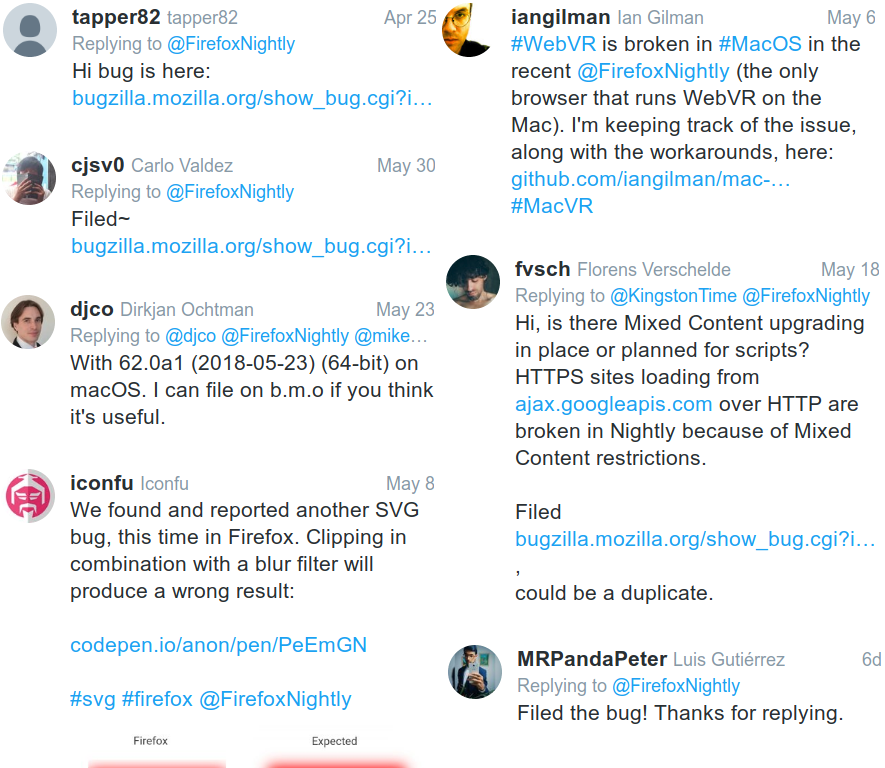Every day we look at what landed in nightly
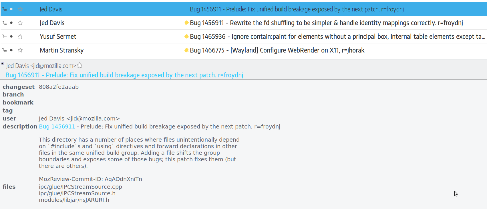Feature or interesting change? We promote it
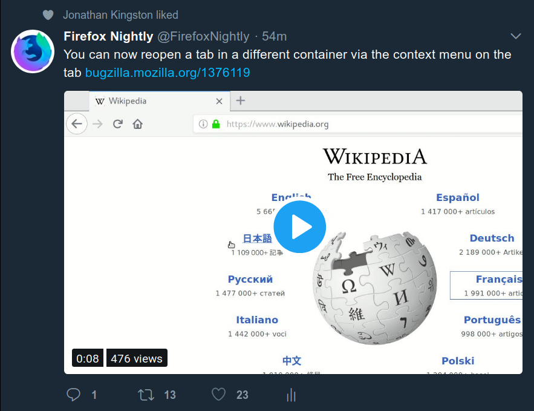- Testers test what they know needs testing
- High engagement on the tweet? Maybe we should relnote the feature?
Twitter communication integrated in Relman processes
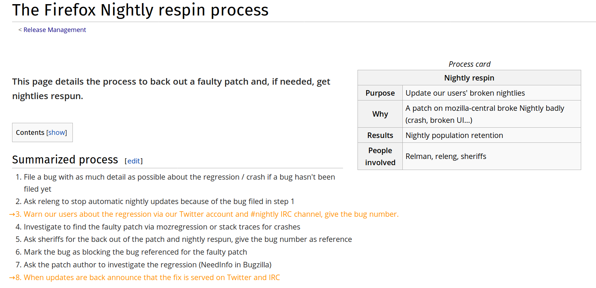Examples of communication of incidents
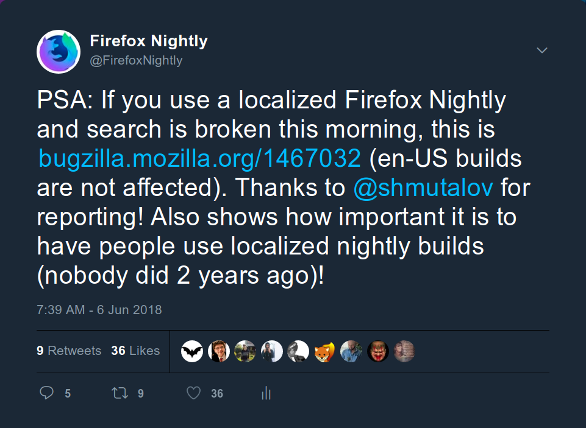Examples of communication of incidents
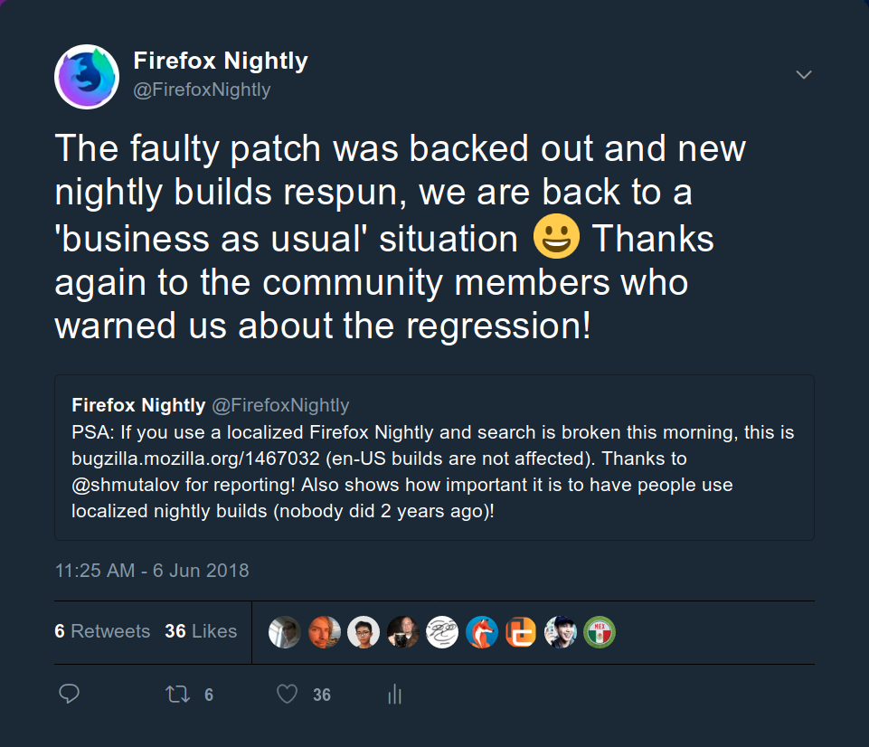Examples of communication of incidents
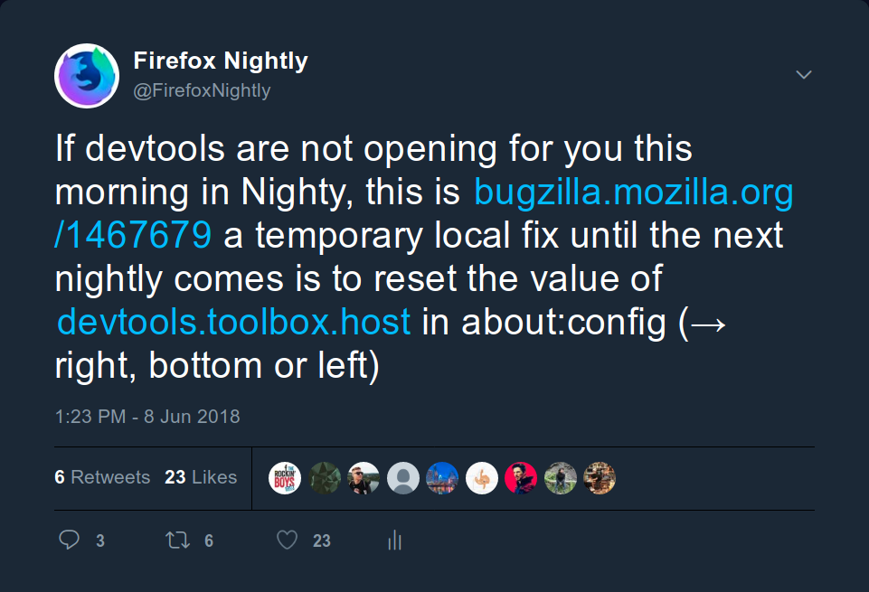We also promote our blog articles
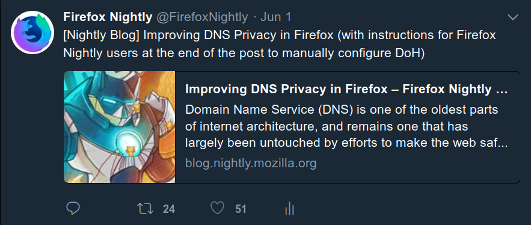Contact information
 pascal@mozilla.com
pascal@mozilla.com pascalchevrel
pascalchevrel pascalc
pascalc